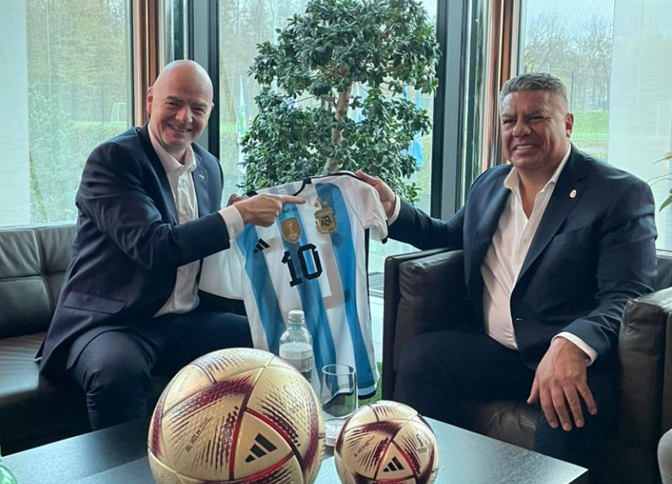
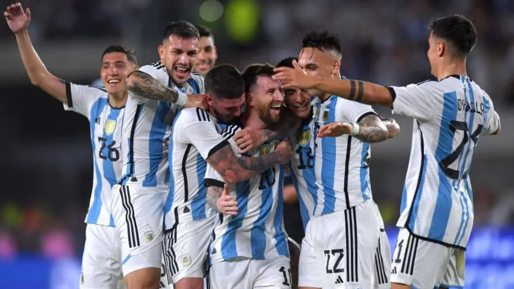
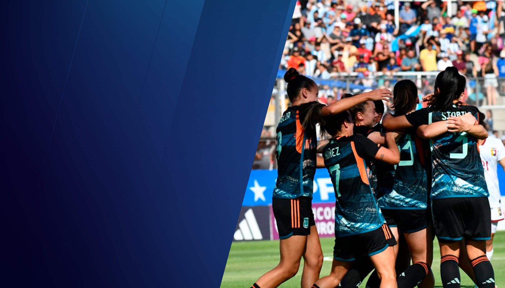
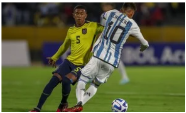
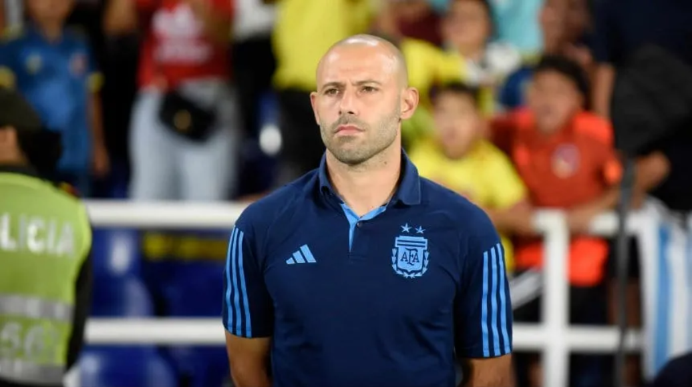
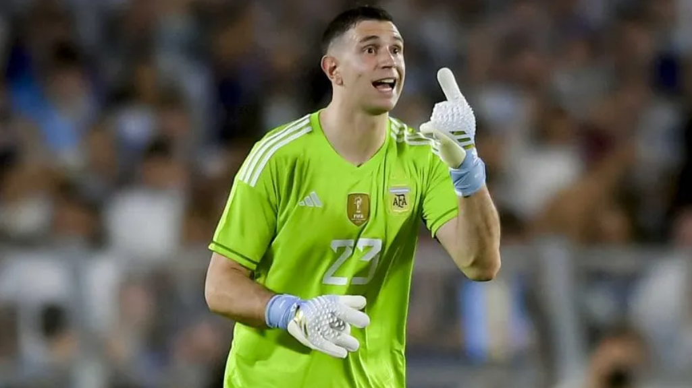

Claudio Tapia se reunió con Gianni Infantino |
China e Indonesia, los posibles |
|  |  |
La Selección Femenina superó |
La Sub 17 cayó ante Ecuador y |
|  |  |
Los convocados de la Selección |
Dibu Martínez, los penales ante Francia |
|  |  |